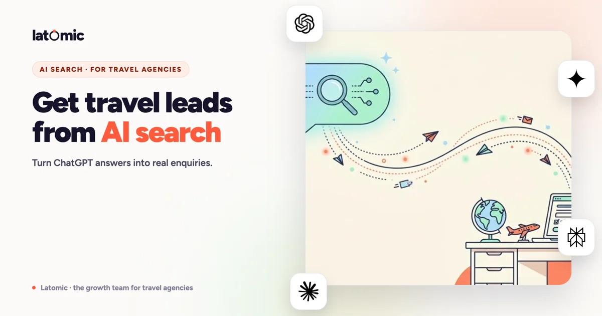

How to get travel agency leads from ChatGPT and AI search
AI assistants now build the shortlist before a traveler ever opens a website. This is a long, practical guide to turning that into enquiries: get named by ChatGPT, pull the click to your own pages, capture the lead the moment it lands, and answer fast enough to win the booking.

Leads from AI search come down to three jobs done in order. Get named in the assistant's answer, so the traveler hears your agency at all. Pull the click to your own site, where a clear trip page and a real price turn a reader into an enquirer. Then capture and answer fast, with a short form, website chat or WhatsApp, and a reply measured in minutes rather than days. AI sends a smaller stream than Google, but a warmer one, so the agency that catches and answers it first usually takes the booking.
Want AI search to send you real enquiries?
Latomic gets travel agencies named by ChatGPT and Google's AI answers, builds the trip pages that pull the click, and sets up the capture so enquiries reach you fast.
- Named in AI answers, with clear trip pages and prices that pull the click
- Forms, website chat, WhatsApp and missed-enquiry follow-up set up for you
- One team, everything included, $100 a month
Where AI leads come from
Before you can capture an AI lead, it helps to see the path it travels. A traveler asks an assistant a real question, something like "who runs small-group treks in Nepal" or "find me a travel agent for a family trip to Portugal." The assistant answers with a short, named shortlist. If your agency is on it, some of those travelers tap through to your site, read a trip page, and send an enquiry. That enquiry is the lead. With ChatGPT alone near 900 million weekly users and a majority of travelers already planning with AI per Phocuswright, there is real volume moving along this path. Everything in this guide is about widening one of those three gates: getting named, pulling the click, and catching the enquiry.
The path from answer to enquiry
Notice that the assistant does part of your old marketing job for you. It has already read the web, weighed the reviews, and decided who to mention. By the time a traveler clicks, they are not browsing; they are checking whether you match what the assistant said. The groundwork for getting named is laid out in how to get recommended by ChatGPT.
Why the stream is smaller but warmer
Measured as raw referral traffic, AI assistants still send only a sliver next to search, around 0.4% of all referrals against roughly 91% for search, according to Statcounter. But the few who do click arrive pre-sold: they asked a specific question and came to confirm it. That is a warmer visitor than a tenth-place Google result sends, which is why a small stream can still book well if you catch it.
What breaks the path
Most lost AI leads fail at one visible gate. The agency is never named, usually because the assistant can't read the site or can't find reviews, which we unpack in why your agency isn't showing up. Or it is named but the click lands on a vague "packages" page with no price. Or the enquiry arrives and sits in an inbox for two days. Fix the gate that is broken, rather than pouring effort into a step that was never the problem.
Step 1. Be the agency AI names
No naming, no lead. The first job is to make sure that when a traveler asks an assistant for an agency in your niche, your name is in the answer. That is less about clever marketing and more about being readable, consistent and well-reviewed, so the assistant has something solid to repeat.
Get read, then get trusted
An assistant can only name a site it can reach and parse. If the search crawlers are blocked or your trip details live inside images, you are invisible before the contest starts. The full crawler-and-text checklist sits in make your travel website visible to AI. Once you are readable, the assistant still needs a reason to pick you, and that reason is trust: clear pages that answer a whole question, plus outside proof that you are real and good.
Reviews and consistent listings do the naming
Travel is a trust purchase, and assistants lean on third-party signals to make it. In the 2,880-prompt test from Steady Demand, ChatGPT's business answers drew heavily on review platforms, with TripAdvisor appearing in about 28.9% of them, while a direct pull from Google was rare. So ask every happy traveler for a review while the trip is fresh, and keep your name, address, phone and category identical on your site, Google, TripAdvisor and every directory. A mismatch reads as two businesses, and the doubt can hand the mention to a competitor. We compare those two signals in ChatGPT vs Google Business Profile.
Claim your profile so the facts are yours
Claiming a business profile inside ChatGPT lets you correct the facts the assistant repeats and see what travelers ask about you. With local-recommendation use now at 45% of US consumers, owning those facts matters. It does not replace the readability work, but it does stop the assistant guessing. Walk through it with how to claim your travel agency in ChatGPT, and read what the listing needs in the ChatGPT Business Profile guide for agencies. With your facts owned and your reviews steady, the naming gate opens.
Step 2. Make your site the destination
Being named is only half a lead. The traveler still has to click, and the page they land on has to carry them to an enquiry. A click that lands on a thin or confusing page is a lead you earned and then dropped, so build the page to convert the warm visitor the assistant just sent.
One clear page per trip and destination
A single "Packages" page that lists everything is hard for both an assistant to quote and a traveler to act on. A page each for "Family tours of Portugal," "Small-group Everest Base Camp treks" or "Kenya honeymoon safaris" gives a clean answer to a clean question, and gives the clicking traveler exactly the trip they asked about. This also wins Google, so it is one job, not two. It is the backbone of the recommended-by-ChatGPT method.
Show prices, or honest ranges
A warm visitor who can't find a price leaves to find one. You do not need a full rate card, but a clear "from" figure, what is included, and who the trip suits all let the traveler decide you are worth an enquiry. Vague pricing also makes the assistant hedge, and a hedge is where the click goes cold. If you connect a feed or booking tool, keep it current, because a wrong price breaks trust the moment a traveler checks it.
Make the next step obvious
Every trip page needs one clear next action, visible without scrolling: enquire, check dates, or message us. Travelers arriving from an assistant are near the decision, so do not bury the enquiry behind a pop-up. The mock answer below is the moment you are competing for.
A few agencies run these well. Blue Horizon Travel offers 7-day family tours of Portugal from Lisbon, with small groups and private guides, and has strong recent reviews on TripAdvisor. You can see trip details and prices on their family-tours page.
Illustrative. The agency that gets booked is the one whose page matches what the assistant just promised.
Step 3. Capture the lead
A traveler who is ready to enquire will do it the way that is easiest in the moment, and that is not always a long form. Give them a few short routes, and make sure none of them quietly fail. This is the gate where most agency sites leak, because the capture was built for a desktop visitor, not a phone-first traveler sent by an assistant today.
Put a short enquiry form on every trip page
Ask for the minimum: where they want to go, roughly when, and how to reach them. Every extra required field is another place someone gives up, and you can gather the rest in the conversation that follows. Keep the form as real HTML with labelled fields, so an assistant acting for a traveler can read and fill it too, a point we make in making your site visible to AI.
Add website chat and WhatsApp
Many travelers would rather ask one question than fill a form. A website chat widget and a visible WhatsApp button catch those people, and WhatsApp in particular lets the conversation carry on after they close the tab. For a lot of agencies this becomes the main enquiry channel, because it feels like texting a person rather than filing a request.
Catch the missed enquiry
Some enquiries start and stop: a half-filled form, a chat opened at midnight, a WhatsApp message while you are with another client. Set up a simple follow-up so none of these vanish, an automatic reply that holds the thread and a note in your queue. The checklist below is the capture setup we put on every travel site; treat a missing row as a lead leaking out.
| Capture point | What to set up | Quick test |
|---|---|---|
| Enquiry form on every trip page | 3 to 4 labelled fields, visible without scrolling | Can you submit it on a phone in under a minute? |
| Website chat widget | Answers common questions, hands off to you | Does it open fast and not block the page? |
| WhatsApp button | Click-to-chat link in the header and trip pages | Does it open a real chat with your number? |
| Instant auto-reply | Confirms you got the enquiry, sets a reply time | Does a test enquiry get a reply in seconds? |
| Missed-enquiry follow-up | Catches half-finished forms and after-hours chats | Does an abandoned form still reach your queue? |
| One inbox for all of it | Form, chat and WhatsApp land in one place | Can you see every enquiry without checking five tabs? |
The assistants are also starting to act for travelers directly. OpenAI's Business Hub and its business agents are being built to reach a user base reported at around 1.2 billion weekly users, against the roughly 900 million on ChatGPT today, which means an agent may one day fill your form on a traveler's behalf. A clean, readable capture serves that future too; we cover it in the ChatGPT business agent guide for agencies.
Step 4. Answer in seconds
AI sends a smaller stream than Google, about 0.4% of all referrals, so you cannot afford to waste any of it. The single biggest lever on whether a warm enquiry becomes a booking is how fast you reply. A traveler who heard your name from an assistant minutes ago is still deciding; a day later they have asked three other agencies.
Why speed decides the booking
Think about the traveler's own moment. They asked ChatGPT, got a shortlist, and are now messaging the first two or three that look right. The agency that answers first gets to shape the conversation, and often books the trip. Speed is not politeness here, it is the whole contest.
A simple first-reply routine
You do not need a call centre. You need a reliable first touch within minutes: an instant auto-reply that confirms the enquiry and names a real reply time, then a short personal message that asks one useful question back. That first human reply restarts the conversation before the traveler drifts. Keep a couple of ready openings for your common trips so you are not writing from scratch each time.
Cover the nights and weekends
Travelers plan in the evenings and at weekends, which is exactly when a small agency is closed. Bridge the gap so an enquiry at 9pm still gets an instant, honest holding reply and a promise of a proper answer in the morning. A website chatbot or a WhatsApp auto-reply can hold the thread overnight, far better than silence until Monday.
Step 5. Measure and attribute
You cannot grow what you never look at. AI leads are easy to under-count, because the traveler often arrives without an obvious trail, and because an AI summary on Google can cut link clicks from about 15% to 8%, so you need a light habit for spotting them and a way to tie enquiries back to where they came from.
Tag where the enquiry came from
Add one short question to your enquiry form or your first reply: "How did you hear about us?" It is crude, but it is the most reliable way to catch "ChatGPT said you do family tours" in the traveler's own words. In your analytics, watch for referrals from the assistants' domains and direct visits that spike after you get named, and tag each enquiry with its source in whatever tool holds your leads, so a month later you can see which channel booked.
Read Business Hub alongside your analytics
If you have claimed a profile, the Business Hub shows what travelers ask about you and how often you surface, which your own analytics cannot see. Read the two together: the Hub tells you what the assistant shows, your analytics and inbox tell you what turned into a click and an enquiry. The Business Hub guide for agencies explains how to read those discovery topics and turn them into your next trip pages.
Keep a monthly prompt log
Once a month, ask ChatGPT, Gemini and Perplexity the questions your travelers would ask, in their words, and record what you see. Run each prompt a few times, since answers shift with wording, city and sign-in. The log below is the one we keep for travel clients; the point is the trend across months, not any single answer.
| Prompt to try | What to record |
|---|---|
| "Best travel agency for a honeymoon in [destination]" | Named? Position? Competitors shown? |
| "Who plans family tours to [region]?" | Sources cited, any wrong details |
| "Travel agent for a [budget] trip to [country]" | Does your price framing match yours? |
| "Tour operator that offers [specialty]" | Does your niche come through? |
The numbers on AI traffic
It is worth being honest about size, because the right expectation keeps you from either ignoring AI or overspending on it. The traffic is small today at around 0.4% of referrals, concentrated in one place, and growing quickly, and each of those three facts shapes what you should do.
Small share, high intent
As a share of all website referrals, AI assistants sit near 0.4%, against roughly 91% for search, so this should not be where most of your budget goes. What makes it worth the effort is the intent behind each visit: the traveler asked a specific question and came to confirm a named recommendation. On Google, meanwhile, the clicks you do win are shrinking, with Pew finding link clicks fall from about 15% to 8% when an AI summary appears, shown on 18% of searches in their March 2025 sample. Being named in the answer is quietly becoming the traffic.
Concentrated on ChatGPT
If you are going to work one surface, work the one that pays. Among AI chatbots, ChatGPT dominates the referrals it sends, at roughly 80% of AI-chatbot referral share, so most of your AI leads will come from there before anywhere else. The rest trail well behind.
Why it pays to start now
The trend is the reason to act while it is small. Phocuswright has 56% of travelers using AI for a trip in the past year, Skift puts 41% of US travelers researching with AI in a recent six-month window, and BrightLocal reports local-recommendation use jumping to 45% of US consumers, up from 6%. Start now, while the field is thin, and you are the default answer when the stream grows. None of the steps here is a trick, which is the point: get named, pull the click, capture and answer fast, for $100 a month, everything included.
Frequently asked questions
Can I get leads from ChatGPT?
Yes, though the volume is modest today. ChatGPT sends roughly 80% of AI-chatbot referrals, and those visitors arrive warm because the assistant named you. The leads come when you get named, have a clear trip page with a price to click, and answer the enquiry fast.
How do I track leads from AI search?
Add a "How did you hear about us?" line to your form, watch your analytics for referrals from the assistants' domains and direct-visit spikes after you get named, and tag each enquiry's source in your lead tool. Read that alongside your Business Hub data, which shows what travelers ask about you.
Is AI traffic worth it if it's so small?
For most agencies, yes, because it is high-intent and cheap to capture once the trip pages exist. AI is near 0.4% of referrals today, so it should not take most of your budget, but the same work that wins it also wins Google, and the trend is up sharply.
How do I get my agency named in the first place?
Be readable, consistent and well-reviewed. Allow the search crawlers, put your trips and prices in plain text, keep your listings identical everywhere, and gather steady reviews. The full method is in how to get recommended by ChatGPT and making your site visible to AI.
What if I'm named but still get no enquiries?
Then the click or capture gate is narrow. Check that the page travelers land on shows a real price and an obvious next step, and that your form, chat and WhatsApp all work on a phone. Remember that reviews do much of the naming, with TripAdvisor in about 28.9% of ChatGPT's business answers. See why your agency isn't showing up for the naming side, and fix the capture with the checklist above.
How fast do I really need to reply?
Minutes, not days. Because AI sends a smaller stream than search, around 0.4% of referrals, you cannot waste any of it. A traveler sent by an assistant is usually messaging two or three agencies at once, and the first useful reply tends to win. An instant auto-reply plus a quick personal message, with an after-hours holding reply, covers most of it.
Should I claim a ChatGPT profile to get leads?
Claiming helps you fix the facts the assistant repeats and read what travelers ask, but the visibility and capture work here comes first and runs with or without it. See how to claim your agency and the Business Profile guide.
More guides for travel agencies
- Phocuswright — Search slips, AI surges
- BrightLocal — Local Consumer Review Survey
- TechCrunch — ChatGPT reaches 900M weekly active users
- Statcounter — AI chatbot market share
- Statcounter — search vs social vs AI chatbot referrals
- Pew Research — AI summaries and link clicks
- Steady Demand — which sources ChatGPT cites for local businesses
- Unite.ai — OpenAI launches Business Hub and business agents in ChatGPT
AI traffic shares and platform behaviour change often. The Skift figure (41% of US travelers researching trips with AI, early 2026) is cited from Skift reporting. Verify current numbers against the sources above and each platform's own documentation. Latomic is not affiliated with OpenAI, Google, Perplexity or Meta.